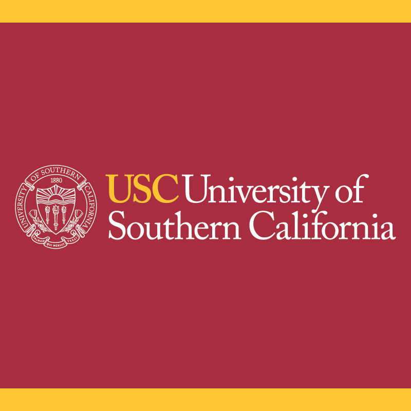

CV
Download my resume using the button →
BASICS
NAME
Soorya Narayanan V
PHONE
+1 (213) 843-8543
GITHUB
LINKEDIN
AWARDS
LOCATION
Los Angeles, CA
EDUCATION

2025.08 – 2027.05MS, Applied Data Science (GPA 3.85/4.0)
- Coursework: Data Mining (PhD), Operating Systems, Applied Natural Language Processing, Parallel & Distributed Computing.
- Grader for USC’s Data Visualization Course (DSCI 554) — React, Vue.js, D3.js; chart selection and data storytelling.
2020.09 – 2025.05
BS, Artificial Intelligence & Data Science (GPA 3.7/4.0)
- Coursework: Data Structures & Algorithms, Machine Learning, Deep Learning, Distributed Networks, Data Science.
- Minors: Business Data Analytics.
WORK EXPERIENCE
Graduate ML Researcher — WiDES Lab (Verizon)
2026.01 – PRESENT- Led a Verizon-sponsored initiative to productionize PMNet, a custom 3D autoencoder for RF pathloss prediction across cities, cutting simulation turnaround from months to hours at 98% fidelity (dB).
- Scaled training to a multi-node distributed setup across 2×A40/A100 — SLURM allocations with scaling curves, torchrun, FP16 mixed precision on HPC.
- Ran large-scale batch inference over 19,000+ geospatial samples and engineered an end-to-end ETL pipeline fusing simulation outputs (Wireless InSite + NVIDIA Sionna) with 3D urban geometry into ML-ready pathloss map datasets.
- Profiled and optimized inference throughput and memory footprint across the pipeline: reduced test-set MAE by 57% and raised Model FLOPs Utilization from 30% to 37% over a non-deep-learning baseline; delivered transmitter placement recommendations to Verizon.
AI Research Engineer — Neurosymbolic, Multi-Agent Negotiation
2026.05 – PRESENT- Architected a multi-turn inference pipeline for a 13-agent swarm, migrating from vLLM to SGLang to exploit native prefix-tree (Radix) KV sharing — cut Time-To-First-Token by ~40% during complex conversational forking and eliminated per-agent VRAM overhead via shared-history caching.
- Self-hosted serving and evaluation (SGLang, Qwen2.5-7B) with tensor parallelism, GPU-adaptive dtype, flash-attention backend, and fail-fast kernel checks on heterogeneous HPC GPUs.
- Ran ~3,900-call sessions with atomic checkpointing and crash-resume, shipping statistical ZOPA analysis alongside cost-per-round optimizations.
Graduate Research Assistant — CeNEC Lab (Google)
2025.09 – 2026.04- Built a systematic evaluation framework and best-practice benchmarking pipeline across 10 frontier LLMs, producing structured analysis reports and technical findings that informed model selection decisions.
- Identified where models were confidently wrong against human cognitive baselines.
- Architected benchmarks for “metaphor comprehension” and “auditory imagery perception” across ~9 major frontier models, uncovering a ~14% confidence-accuracy gap; building a ground-truth benchmark dataset.
ML Engineer (Model Evaluation & Computer Vision)
2024.07 – 2025.08- Rebuilt the real-time wild face recognition pipeline on live video streams, improving accuracy from 42% to 93% by re-architecting the embedding, filtering, preprocessing, and async messaging (RabbitMQ) layers.
- Added FAISS vector search, cutting query latency from ~850ms to ~70ms.
- Benchmarked 14+ open-source face detection and recognition models with systematic latency-accuracy-cost tradeoff analysis, and fine-tuned selected models to client requirements.
- Led technical demos and deployment-architecture walkthroughs, converting 2 prospects worth ~$520K in revenue.
Data Science Intern
2023.05 – 2023.08- Engineered a production-grade LightGBM lead-scoring model surfacing 7 KPIs from raw CRM data, cutting lead-to-conversion time from ~3 days to ~7 hours (71% reduction) and improving sales conversion by 65%.
- Added automated retraining triggered on incoming data for the sales operations team.
PROJECTS
Nika — 2×1M MoE Transformer Built from Scratch
2026.05- Built a 2×1M-parameter Mixture-of-Experts transformer from scratch (RoPE, attention, SwiGLU, RMSNorm) with torch.export/fx tracing and KV-cached inference.
- Added DDP plus a hand-rolled ring all-reduce with failure detection across multi-node workers.
- Ported to Apple Metal (MPS) and profiled to isolate a real communication-bound vs compute-bound bottleneck.
- GitHub →
Immuny — LLM Routing + Edge Deployment
2026.01 – PRESENT- Built a clinical AI allergy tracker with an LLM routing layer delegating between AWS Nova Micro and MedGemma 7B (4-bit quantized).
- Stored conversation history in DynamoDB with schema-defined data models for active production users.
- Exported to ONNX for fused-graph inference on resource-constrained hardware.
- Live app →
RL from Verifiable Rewards (RLVR)
2025.12- Applied GRPO via HuggingFace TRL to fine-tune Qwen2.5-7B on tau2-bench in a multi-node distributed training setup, emitting structured JSON tool-call sequences using dual reward functions (format + correctness).
- Optimized inference cost and accuracy jointly, improving JSON formatting accuracy to 87% with 4-bit NF4 quantization + LoRA (rank 16).
- GitHub →
Intelligent Bistro — Tool-Calling & Recommendation Test Framework
2026.03- Built a multi-turn, multi-tool agentic system (Expo React Native + Node.js) with 9 LLM tool-calling functions, Zod validation, and an MCP server for production analysis.
- Shipped voice TTS/STT, a 4-signal recommendation engine (popularity, session, pairings, compatibility), and SQLite-backed order management.
- Wrote a validation framework of 236 automated tests at 94% coverage in CI/CD, ensuring reliability of non-deterministic ranking and recommendation logic.
- Watch demo → · GitHub →
Reinforcement Learning Autonomous Driving
2025.12- Trained a PPO-based RL agent on a custom ray-casting car simulation, optimizing reward shaping to achieve stable trajectory control and reducing collision rate by 40% over a random-policy baseline.
- Watch demo → · GitHub →
Sentiment-Driven Portfolio Optimizer
2025.03 – 2025.07- Combined Black-Litterman optimization with FinBERT-derived sentiment signals from financial news.
- Achieved a Sharpe Ratio of 1.43, portfolio alpha of 6.2%, and 95% VaR of 3.1%, outperforming passive S&P 500 allocation; produced a full investment report.
SKILLS
Languages & Fundamentals
Python, C++, TypeScript, SQL, Rust, Scala, Git, Linux/Bash
ML Frameworks
PyTorch, Keras, OpenCV, Scikit-Learn, JAX, NumPy, HuggingFace, CUDA, RAG, MCP, DDS, Triton, torch.compile
Systems & Infra
Flask, Docker, Kubernetes, Spark, Airflow, GitHub Actions, CI/CD Testing, Auto-Retraining, RabbitMQ, MLIR, LLVM
Machine Learning
vLLM/SGLang, Pre & Post-Training, Inference, Nsight, Profiling, MoE, SVD, XGBoost, CV, SFT, LoRA, Distillation